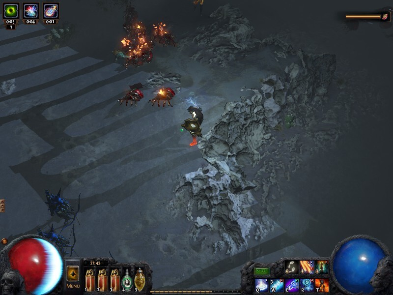

A Deep Learning Based AI for Path of Exile: A Series
Sat, 08 Jul 2017
Bot, Computer Science, Deep Learning, Gaming, Machine Learning, Poe, Python, Software
This post is the first in a series on creating an AI for the game Path of Exile based on deep learning and other machine learning techniques. A list of posts in this series follows.- A Deep Learning Based AI for Path of Exile: A Series
- Calibrating a Projection Matrix for Path of Exile
- PoE AI Part 3: Movement and Navigation
- PoE AI Part 4: Real-Time Screen Capture and Plumbing
- AI Plays Path of Exile Part 5: Real-Time Obstacle and Enemy Detection using CNNs in TensorFlow
Overview
Path of Exile is a hack-and-slash style RPG similar to Diablo, Titan Quest, etc. A screenshot from the game is shown below in Figure 1.

Figure 1: Screenshot of Path of Exile
The player interacts with the game primarily by using the mouse to move, attack monster, open chests, etc. Keyboard hotkeys are also used for special attacks, potions, and menu shortcuts.
High-Level Design
The idea for the AI is to use a Convolutional Neural Network (CNN) to classify images from the game in order to build an internal representation of the world. This internal representation of the world is then to used to guide the character through the world. The basic idea of the AI is represented in Figure 2 as a flowchart.

Figure 2: Flowchart of AI Logic
The main loop of the AI program takes a still image from the game and passes it to a CNN. The CNN predicts what is occurring in the still image. These predictions are then passed to an internal map of the world. The internal map of the world is then updated based on the latest predictions. Given the present state of the internal map of the world, a number of actions are generated. Finally, these actions are then translated into mouse and keyboard input and sent to the mouse and keyboard. The loop is repeated indefinitely. Easy, right? Right.
The programming language chosen is Python (3.6). The primary libraries to be used are:
- scikit-learn
- TensorFlow
- PyUserInput
- win32gui
- scikit-image